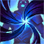
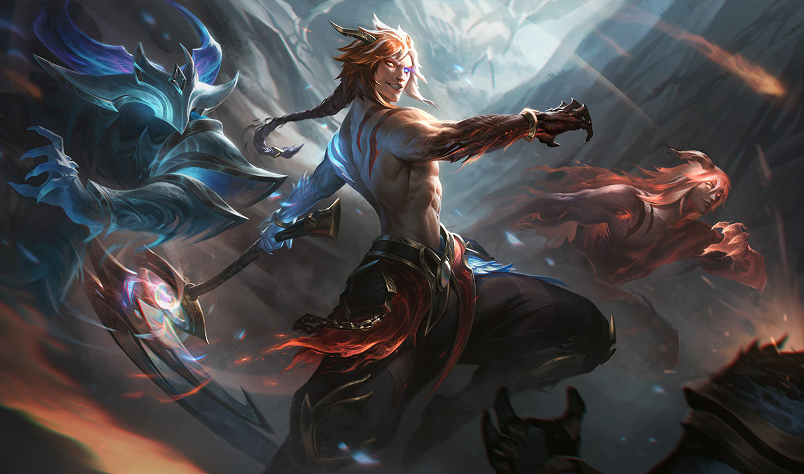

O CEIFADOR DAS SOMBRAS
KAYN

Função
Lutador

Dificuldade
Alta
Inigualável praticante da letal magia sombria, Shieda Kayn luta para alcançar seu verdadeiro destino: um dia comandar a Ordem das Sombras rumo a uma nova era de supremacia ioniana. Indiferente à maquiavélica degradação que ela causa em seu corpo e mente, ele empunha uma senciente arma darkin chamada Rhaast. Só duas coisas podem acontecer: ou Kayn faz a arma obedecê-lo... ou a foice maligna o consumirá completamente, preparando o terreno para a destruição de toda Runeterra.
-
HABILIDADES
Passiva
A FOICE DARKIN

Kayn empunha uma arma ancestral, lutando contra Rhaast, o darkin que vive dentro dela, pelo controle. Ou o Darkin triunfará ou Kayn dominará Rhaast para se tornar o Assassino das Sombras. Darkin: Cura uma porcentagem do dano de habilidades causado a Campeões. Assassino das Sombras: Causa dano adicional nos primeiros segundos em combate com Campeões inimigos.
Q
CORTE CEIFADOR

Kayn avança, depois ataca. Ambos dão dano
W
ALCANCE DA LÂMINA

Kayn causa dano e reduz a velocidade dos alvos na linha de fogo
E
PASSO DAS SOMBRAS

Kayn pode atravessar terrenos.
R
TRANSGRESSÃO DO UMBRAL
Kayn se esconde no corpo de um inimigo e causa bastante dano quando rasga sua saída.
-
SKINS DISPONIVEIS:
KAYN
KAYN CAÇADOR DE ALMAS

KAYN ODISSEIA

KAYN EMISSÁRIO DA ESCURIDÃO
KAYN EMISSÁRIO DA ESCURIDÃO EDIÇÃO PRESTÍGIO

KAYN LUA NEVADA